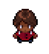
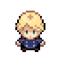
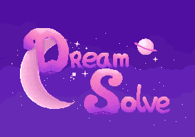
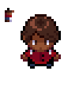
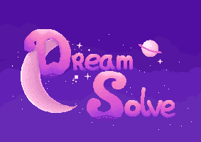
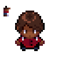

Over de Game
Je speelt als een kind die wilt ontsnappen aan de realiteit via hun droom. Door op creatieve manieren hun weg te vinden in hun droom.
Spring, teken en schrijf om je doel te bereiken en laat je creativiteit los om de juiste manier te vinden.
In deze creative game probeer jij je creatieve zelf terug te vinden en heb je veel plezier terwijl je ermee bezig bent!


Nadat wij onderzoek gedaan hadden naar hoe creativiteit zichzelf vordert in het leven van een kind, zijn wij erachter gekomen dat de creativiteit steeds minder wordt namater het kind ouder wordt.
Dit komt vaak door toetsen en huiswerk opgaven, tot groep 5 zijn kinderen bezig met 'spelen' ze knutselen veel en doen niet echt veel aan huiswerk en andere vaardigheden.
In groep 5 gaan ze echt aan de slag met toetsen en leren ze dat ze geen fouten mogen maken want dat is slecht.
Dit is natuurlijk slecht voor de creativiteit omdat je dat juist bevorderd door fouten te maken, die te verbeteren en verder te gaan.
Met onze game willen wij die creativiteit bevorderen door te de kinderen te leren dat je fouten mag maken.
Wij hopen dat door het spelen van deze game, het kind hun creativiteit terug vind en het ook behoud.
Verhaal
Het verhaal gaat als volgt:
Je speelt als een kind uit groep 5 dat elke dag naar school gaat, daar krijg je tekenopdrachten via je leerkracht.
Maar 's avonds als je gaat slapen gebeuren er rare dingen en opeens zit je vast in je dromen met alle monsters die jij getekend hebt,
via creatief denken probeer jij te ontsnappen van je monsters en wakker te worden uit de droom die langzaam een nachtmerrie is geworden.
Concept Art
Zie hier een aantal concepten die ik getekend heb voor onze game:
 



We wilden zorgen dat iedereen zich gehoord voelt in onze game, hiervoor hebben we dus ook een karakter ontworpen met een donkere huidskleur.
Het logo moet kinderen en volwassenen aanspreken en een dromerig gevoel afgeven, door paarse en roze kleuren te gebruiken voelt het ook echt als een droom aan.
De wolk is een concept voor de achtergrond van de game en geeft een zacht gevoel af door de vele gradients die gebruik zijn in de maak ervan.
Bronnen
Mijn teamgenoot Aiden heeft een pdf bestand gemaakt waarin er ingegaan wordt op creativiteit en hoe creativiteit bevorderd kan worden via verschillende middelen.
Creativiteit verslag